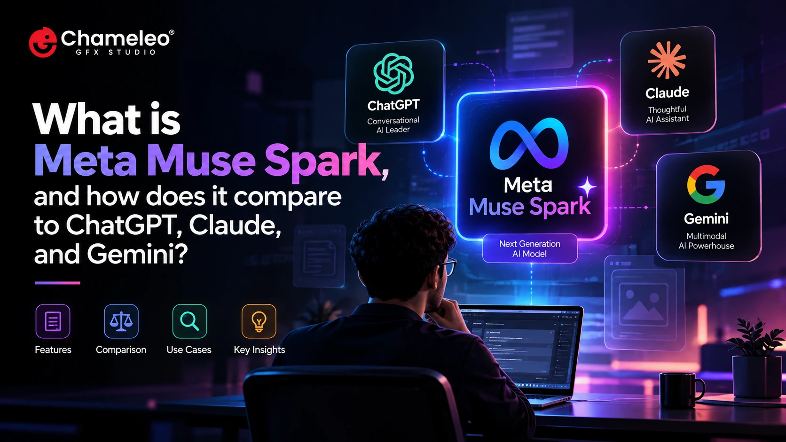

What Is Meta Muse Spark, and How Does It Compare to ChatGPT, Claude, and Gemini?

If you have wondered whether Muse Spark belongs next to the assistants you already use, you are not alone. Meta entered the frontier race in 2026, and its models now compete in a crowded field of generative AI tools that change almost monthly. This guide explains what Meta Muse Spark is, how the Meta Muse Spark AI model works, its strengths and limits, and how it compares with ChatGPT, Claude, and Gemini. Details were checked against official announcements and reputable reporting on October 22, 2026, so treat them as a snapshot.
Table of Contents
What Is Meta Muse Spark?
Muse Spark is an artificial intelligence model from Meta Superintelligence Labs, the group Meta created for its frontier AI work. Meta introduced it on April 8, 2026, as the first model in its new Muse series, describing it as a natively multimodal reasoning model with tool use, visual chain of thought, and multi-agent orchestration. At launch, it powered the Meta AI app and meta.ai, with a planned rollout to WhatsApp, Instagram, Facebook, and Messenger.
Two details help explain where it sits among artificial intelligence models. First, it is proprietary: Artificial Analysis, which benchmarked it with early access, noted it was Meta’s first frontier model not released with open weights. Second, the name now covers a family.Muse Spark 1.1 arrived with a public preview of the Meta Model API, version 1.3 focused on agentic and coding work, and Muse Wonder was announced on October 12 as a more advanced tier. In practice, “Muse Spark” means one version inside a growing lineup.
How Does the Meta Muse Spark AI Model Work?
Meta says it rebuilt its pretraining stack and claims Muse Spark matches its predecessor, Llama 4 Maverick, with over an order of magnitude less compute. That is Meta’s own claim, not an independent measurement.
In use, the model offers a fast mode for casual questions and several reasoning modes for harder ones, according to Axios. Meta also describes thought compression, a training technique that rewards solving problems with fewer reasoning tokens. At launch, it accepted voice, text, and image input but returned text only, which may have changed since.
Around the model, Meta has built products. Muse is a personal agent that runs on a dedicated virtual machine holding the agent and the person’s data, reachable in its own app or in WhatsApp. Developers use the Meta Model API and the Muse Code terminal agent. On October 15, Meta also released Muse Spark Open, an open-weights version with 816 billion total parameters, 42 billion active at a time, and a one-million-token context window. A mixture-of-experts design activates only part of the network for each token, which helps manage cost and speed.
Meta Muse Spark Features and Limitations
Here is what stands out, and what deserves caution
Notable features
- Multimodal reasoning: At launch, Artificial Analysis called it the second most capable vision model it had benchmarked, a useful signal for image tasks.
- Social and shopping context: Meta planned to draw on content shared across Instagram, Facebook, and Threads, and Axios noted a shopping mode as a differentiator.
- Health questions: Meta says it worked with physicians on answers to common health questions, which is general information, not medical advice.
Limitations to weigh
- A fast-changing lineup: Names such as Meta AI, Muse, Muse Spark, and Muse Wonder overlap. Wonder reached developers first, with Muse app subscribers next, so check which model powers the feature you use.
- Regional access: Meta says Muse is available in the US and Canada. Check Meta’s pages for your country.
- Privacy questions: At launch, Axios noted that Meta’s privacy policy sets few limits on how it can use data shared with its AI. Meta plans a Confidential VM later this year, but a planned feature is not a shipped one. Read the current policy before sharing sensitive material.
- Limited independent testing: Many strong claims come from Meta’s own benchmarks, so validate them yourself.
Meta Muse Spark vs ChatGPT vs Claude vs Gemini
The table compares the latest versions verified on October 22, 2026. Plans vary by region, so confirm details on each official page (Meta AI, ChatGPT, Claude, Gemini) before deciding.
| Factor | Meta Muse Spark | ChatGPT | Claude | Gemini |
|---|---|---|---|---|
| Latest version verified | Muse Spark 1.3; Muse Wonder announced Oct 12 | GPT-6: Sol on paid plans, Luna on Free and Go | Opus 5.5 and Sonnet 5.5 | Gemini 4 Argon |
| Core strengths (vendor positioning) | Multimodal reasoning, social and shopping context, agent tasks | Interactive answers such as charts, calculators, and small tools | Opus for complex judgment work; Sonnet for everyday tasks and polished documents | Frontier reasoning and agentic coding |
| Multimodal notes | Voice, text, and image input at launch | Text, visuals, and interactive elements in answers | Chart recognition and computer use, per Anthropic | Deep visual perception, per Google |
| Coding and agents | Muse Code terminal agent and Meta Model API | Codex coding tool | Agentic coding and bug fixing, per Anthropic | Coding gains; Antigravity in the Gemini macOS app |
| Integrations | WhatsApp, Instagram, Facebook, and Muse connectors | Plugins inside ChatGPT | Claude Platform, AWS, Google Cloud, and Azure | 40+ connected apps, including Instacart, OpenTable, Adobe, and Shopify |
| Access and pricing | Free Muse tier with limits and reported $20 and $100 plans in the US and Canada; API billed per token | Free and Go use Luna; Plus, Pro, Business, and Enterprise use Sol | Check plans and API pricing on official pages | Argon in the app for Google AI Pro and Ultra subscribers |
| Privacy considerations | Launch coverage flagged broad data use; Confidential VM is planned | Check data settings for your plan | Check data settings for your plan | Check data settings for your plan |
| Main limitation | Changing lineup and regional availability | Free and paid tiers run different GPT-6 models | Opus and Sonnet differ in depth and cost, so choose by task | Newest model limited to paid app plans at launch |
Which AI Tool Is Best for Different Use Cases?
Results depend on the task, version, settings, and your needs. These examples reflect how each company positions its tools, not hands-on testing.
- Research: Test each tool on a topic you know well and check every citation. Long context windows, such as the one million tokens reported for Gemini 4 Argon, help with large documents, but accuracy still needs review.
- Writing: Anthropic positions Sonnet 5.5 as strong at polished documents, while ChatGPT’s Intelligent UI can return comparisons and small tools inside an answer. Give each the same brief and compare tone and editing time.
- Coding: Every vendor now offers a coding agent: Muse Code, Codex, Claude Code, and Antigravity. Test them on your own repositories.
- Everyday assistance: The best choice is often the assistant built into apps you already use, such as Muse in WhatsApp or the Gemini app..
- Digital Marketing. Teams working heavily in Meta’s ecosystem may want to try Muse, since Muse for Small Business can connect Instagram professional account analytics, Facebook Pages, and Meta ad accounts. For content and ad variations, compare outputs across tools and keep a human editor responsible for facts and brand voice.
Measuring Digital Marketing Success
Measure outcomes that connect to revenue. Treat organic traffic and search visibility as early indicators, then focus on qualified leads, conversion rate, cost per lead, customer acquisition cost, revenue, and return on ad spend. Engagement helps diagnose content but should not replace sales data. Set up key events in Google Analytics so form fills, calls, and purchases are counted consistently across Analytics and Google Ads.
Pro Tip
Before launching, search your category on a phone from three different areas of Ahmedabad. Note which competitors, map listings, and ads appear. The differences show where local pages, profile updates, and ad locations can give you an edge.
Frequently Asked Questions
Key Takeaways
- Ahmedabad rewards brands that combine national credibility with local relevance.
- Local search intent often decides who gets the call or the visit.
- An accurate Google Business Profile shapes how easily nearby customers find you.
- Choose channels by buying stage, not by trend.
- Measure leads, costs, and revenue, not likes and impressions.
Conclusion
Ahmedabad’s business market is growing, and customers increasingly begin decisions online. Brands that pair digital visibility with local relevance, a strategic channel mix, and measurable goals are better placed to build a lasting presence. Results take consistent effort, so choose a digital marketing agency Ahmedabad brands can trust for the long term. Chameleo GFX Studio can be that partner.
Ready to Build a Stronger Digital Presence in Ahmedabad?
Connect with Chameleo GFX Studio to discuss your digital marketing goals.